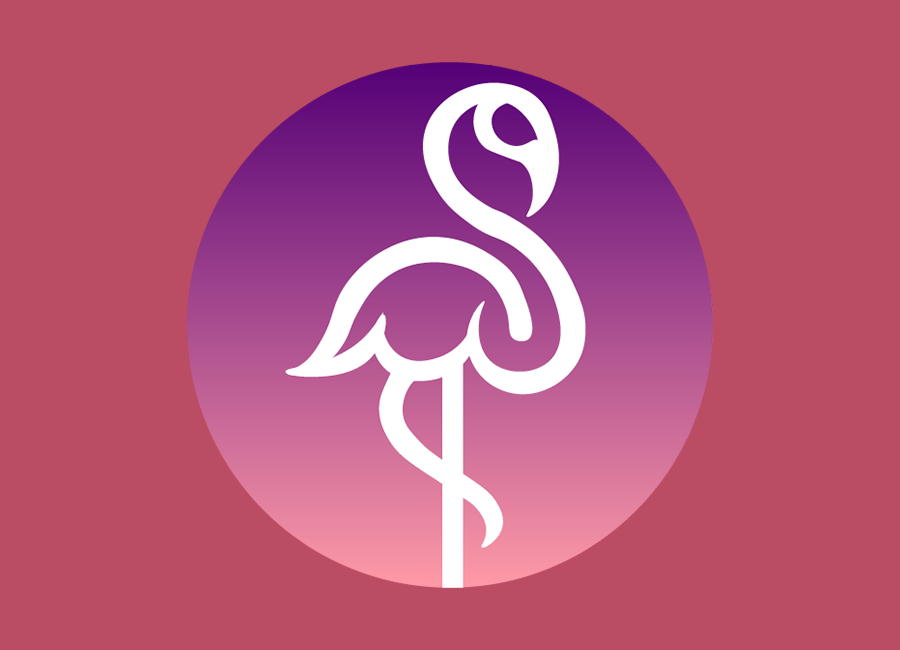
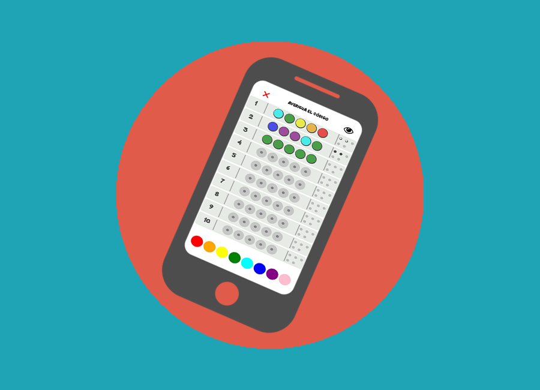
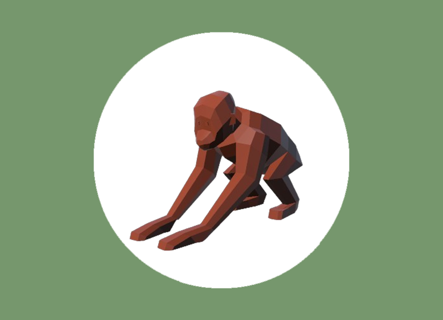
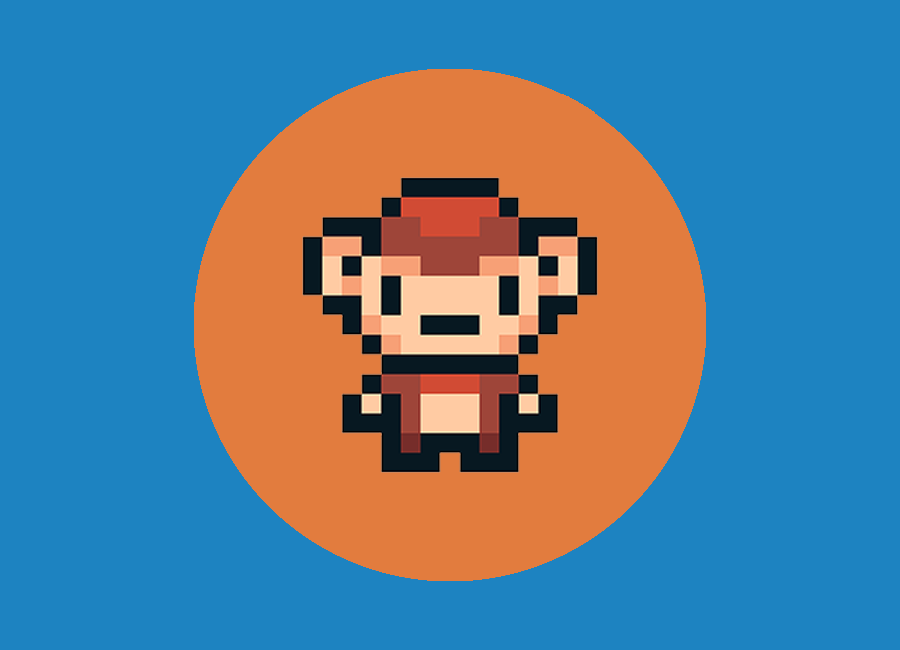
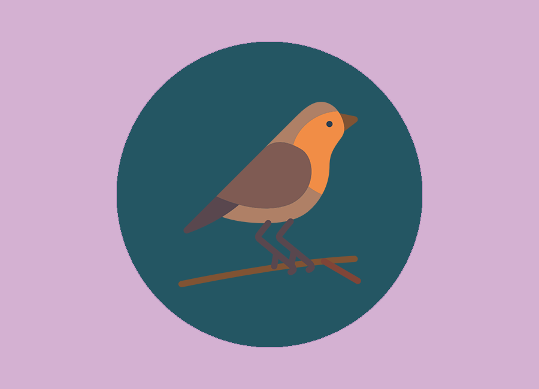
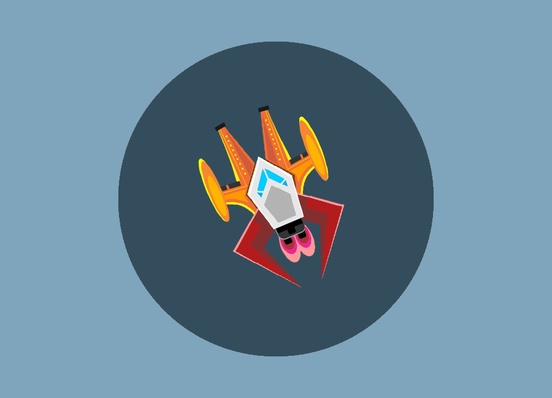
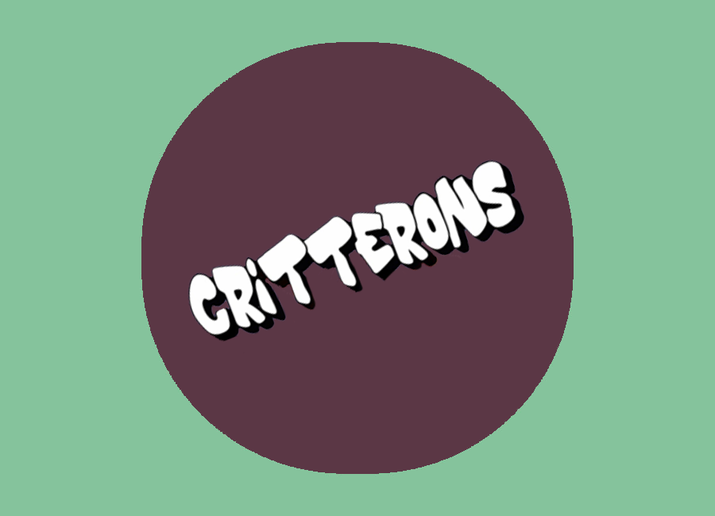

Motor Flamingo
Motor 3D en C++ · Eldersbane
Desarrollador y diseñador de videojuegos · Programación con C#, C++, Java y Python · Unity, Android Studio, Unreal Engine y motores propios
Ver proyectosAlgunos de mis proyectos como motores, juegos móviles, herramientas en Unity.
Toca cada bloque para ver la ficha completa

Motor 3D en C++ · Eldersbane

Android Studio · acelerómetro y partidas

Bots en Unity · mapas de calor

SDL · repartos en la isla

Unity · estados · audio FMOD

Multijugador en C · Linux
Motor multiplataforma

TFG · Spring · MongoDB · sensores
Perfil
Graduado en Desarrollo de Videojuegos. Busco seguir formándome y aportar en equipos que valoren el código limpio y la creatividad técnica. Actualmente me encuentro cursando el máster en Diseño y desarrollo de videojuegos en la Universidad de Complutense de Madrid.
Me centro en programación con C#, C++, Java y Python. Gran parte de mis proyectos han sido desarrollados en Unity, Android Studio o motores y herramientas propias en C++.
Me motivan los retos nuevos y adaptarme a lo que pida cada proyecto. El diseño y la dirección de experiencia de juego son áreas en las que quiero seguir creciendo.
Hablemos
Si quieres comentar un proyecto, una colaboración o una oportunidad laboral, escríbeme por correo o llámame.